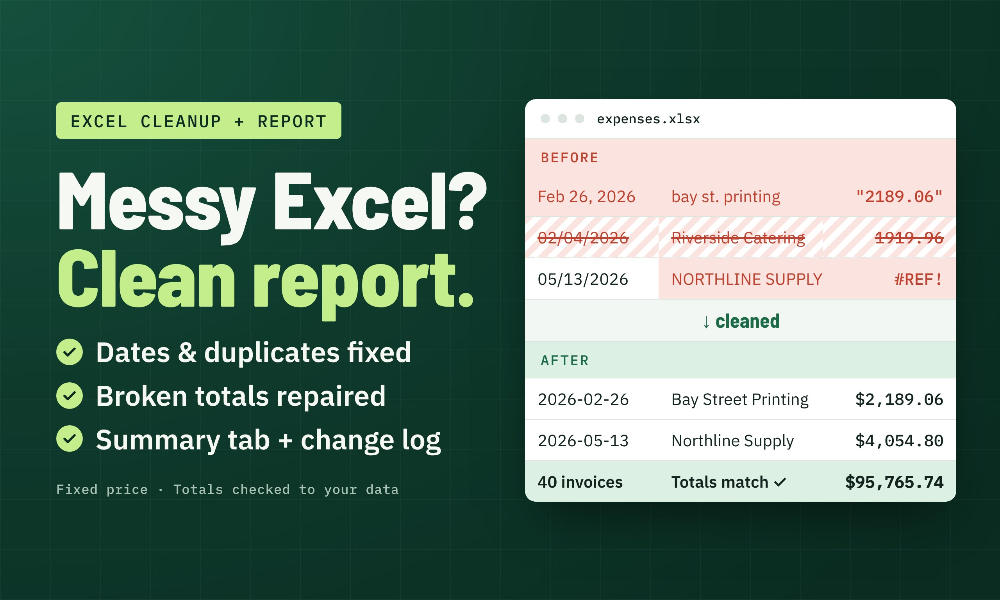

Construcción y oficios
Controla presupuestos de proyectos, gastos de proveedores y sobrecostos por categoría en un archivo de Excel editable.
Cada proyecto recibe una cotización escrita con entregables, precio, plazo, revisiones y exclusiones. Los precios iniciales están en dólares canadienses y dependen del archivo.
Si tu hoja de cálculo tiene fechas en distintos formatos, proveedores duplicados, importes como texto y totales incorrectos, la convierto en una tabla confiable con el resumen que necesitas.
| Paquete | Qué incluye | Entrega | Revisiones | Desde |
|---|---|---|---|---|
| Limpieza rápida | 1 hoja de hasta 2.000 filas. Se corrigen encabezados, fechas, duplicados y fórmulas dañadas. | 3 días | 1 | CA$85 |
| Limpieza + resumen | Hasta 3 hojas y 5.000 filas, más una pestaña de resumen con totales por categoría. | 4 días | 2 | CA$140 |
| Limpieza + informe | Hasta 5 hojas y 10.000 filas, un panel de una página con gráficos y notas de control de calidad. | 5 días | 2 | CA$225 |
Todos los paquetes incluyen un registro de control de calidad y una comprobación de los totales frente al archivo original.
Para quienes gestionan proyectos y necesitan detectar sobrecostos a tiempo. Recibirás un Excel que compara presupuesto y gasto real, señala diferencias y resume todo en una vista.
| Paquete | Qué incluye | Entrega | Llamada inicial | Desde |
|---|---|---|---|---|
| Un proyecto | 1 proyecto, hasta 15 partidas presupuestarias y 12 meses. Diferencias en $ y %, con alertas de sobrecostos. | 4 días | 1 | CA$170 |
| Control + panel | Todo lo anterior, más un panel de una página con gráficos y una guía breve de uso. | 5 días | 1 | CA$280 |
| Varios proyectos | Hasta 5 proyectos con un resumen consolidado, panel, filtro por responsable y guía. | 7 días | 1 | CA$425 |
Hasta dos rondas de cambios dentro del alcance acordado. Solo fórmulas, para que puedas revisar y editar los cálculos.
Estos servicios no están incluidos. Si necesitas alguno, te lo indicaré y ofreceré una cotización aparte o una alternativa.
Ambos ejemplos usan datos ficticios. Puedes abrirlos, modificar valores y comprobar las fórmulas. No contienen datos de clientes ni empleadores.
Arrastra el separador o usa las flechas del teclado para comparar una hoja de cálculo ilustrativa antes y después de limpiarla.
Fechas estandarizadas, proveedores unificados, importes de texto convertidos y una factura duplicada eliminada. Ejemplo ilustrativo; sin datos de clientes.
¿Quieres conocer el proceso detrás de cada ejemplo? Explora los casos prácticos.

Limpieza de Excel: de la exportación al informe confiable →Explora la estandarización, los controles de duplicados y un registro documentado de calidad.
De 45 filas a 40 facturas limpias: 33 fechas corregidas, 29 nombres de proveedores estandarizados, 23 importes convertidos y 5 duplicados eliminados. Incluye pestañas de resumen, equivalencias y control de calidad.
Descargar ejemplo (.xlsx, 20 KB)Seis meses, 90 partidas presupuestarias, diferencias en dólares y porcentajes, alertas de sobrecostos con tolerancia ajustable y comprobación de conciliación en el resumen.
Descargar ejemplo (.xlsx, 24 KB)Formas habituales de usar informes claros en Excel: cada proyecto se define según los archivos disponibles.
Controla presupuestos de proyectos, gastos de proveedores y sobrecostos por categoría en un archivo de Excel editable.
Limpia datos de facturas exportadas y prepara resúmenes mensuales de gastos fáciles de revisar.
Compara presupuestos planificados con gastos reales por programa o categoría de financiamiento.
Reúne gastos de proyectos dispersos en un control coherente con diferencias claramente explicadas.
Estos son ejemplos ilustrativos de uso, no afirmaciones de trabajos realizados para clientes de cada sector.
Microsoft 365 y Excel 2019 o posterior, en Windows o Mac. También puedo trabajar con Google Sheets, aunque algunas fórmulas varían; indícalo al solicitar la cotización.
Uso tu archivo únicamente para el proyecto y lo elimino 14 días después de la entrega. Antes de enviarlo, elimina datos que no necesito, como números de seguro social, cuentas o contraseñas.
Si me encontraste en Fiverr o Upwork, el trabajo y el pago se realizan por esa plataforma. Para proyectos directos, enviaré una cotización con condiciones de pago antes de empezar.
Envíame una muestra y cotizaré el tamaño exacto. Los paquetes son referencias iniciales, no límites de los proyectos que puedo aceptar.
Servicios de informes de Excel desde Toronto. Completa la solicitud de tres pasos y te responderé con alcance, precio y plazo por escrito. FormSubmit procesa el envío del mensaje.
¿Prefieres el correo? Escribe directamente a joeyolivari@gmail.com.